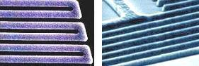

Polysilicon
Thin films of
polycrystalline silicon, or
polysilicon (also known as
poly-Si or poly), are widely used as MOS transistor
gate electrodes and
for interconnection in MOS circuits. It is also used as
resistor,
as well as in ensuring
ohmic contacts for shallow junctions. When
used as gate electrode, a metal (such as tungsten) or metal silicide
(such as tantalum silicide) may be deposited over it to enhance its
conductivity.
Poly-Si is
known to be
compatible
with high temperature processing and interfaces very well with thermal SiO2. As a gate electrode, it has also been proven to
be more
reliable than Al. It can also be deposited
conformally
over steep topography.
Heavily-doped
poly thin films can also be used in
emitter
structures in bipolar circuits.
Lightly-doped
poly films can also be used as
resistors.
Poly-Si
is usually deposited by thermal decomposition or
pyrolysis of
silane at
temperatures from
580-650 degrees C, with the deposition rate
exponentially increasing with temperature. The deposition rate is
also affected by the pressure of silane, which translates to
silane
concentration.
Other important variables in
polysilicon deposition are
pressure
and dopant concentration.

Fig.
1. SEM Photos of Polysilicon Lines
The
electrical characteristics of a poly-Si thin film depends on its
doping.
As in single-crystal silicon, heavier doping results in
lower resistivity. Poly-Si is more resistive than single-crystal
silicon for any given level of doping mainly because the grain boundaries in poly-Si
hamper carrier mobility. Common
dopants
for polysilicon include arsenic, phosphorus, and boron. Polysilicon is
usually deposited undoped, with the dopants just introduced later on
after deposition.
There
are three ways to
dope polysilicon, namely, diffusion, ion implantation,
and in situ doping.
Diffusion doping consists of depositing a very
heavily-doped silicon glass over the undoped polysilicon. This
glass will serve as the source of dopant for the poly-Si. Dopant
diffusion takes place at a high temperature, i.e., 900-1000 deg C.
Ion implant is more precise in terms of dopant concentration control and
consists of directly bombarding the poly-Si layer with high-energy
ions.
In situ doping consists of adding dopant gases to the CVD
reactant gases during the epi deposition process.
|
|
|
Fig.
2. Example of a
Low-Pressure CVD (LPCVD) furnace that
can be used for polysilicon deposition |